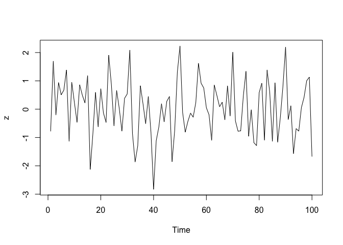

Overview
The magrittr package offers a set of operators which make your code more readable by:
- structuring sequences of data operations left-to-right (as opposed to from the inside and out),
- avoiding nested function calls,
- minimizing the need for local variables and function definitions, and
- making it easy to add steps anywhere in the sequence of operations.
The operators pipe their left-hand side values forward into expressions that appear on the right-hand side, i.e. one can replace f(x) with x %>% f(), where %>% is the (main) pipe-operator. When coupling several function calls with the pipe-operator, the benefit will become more apparent. Consider this pseudo example:
the_data <-
read.csv('/path/to/data/file.csv') %>%
subset(variable_a > x) %>%
transform(variable_c = variable_a/variable_b) %>%
head(100)Four operations are performed to arrive at the desired data set, and they are written in a natural order: the same as the order of execution. Also, no temporary variables are needed. If yet another operation is required, it is straight-forward to add to the sequence of operations wherever it may be needed.
If you are new to magrittr, the best place to start is the pipes chapter in R for data science.
Installation
# The easiest way to get magrittr is to install the whole tidyverse:
install.packages("tidyverse")
# Alternatively, install just magrittr:
install.packages("magrittr")
# Or the the development version from GitHub:
# install.packages("devtools")
devtools::install_github("tidyverse/magrittr")Usage
Basic piping
-
x %>% fis equivalent tof(x) -
x %>% f(y)is equivalent tof(x, y) -
x %>% f %>% g %>% his equivalent toh(g(f(x)))
Here, “equivalent” is not technically exact: evaluation is non-standard, and the left-hand side is evaluated before passed on to the right-hand side expression. However, in most cases this has no practical implication.
The argument placeholder
-
x %>% f(y, .)is equivalent tof(y, x) -
x %>% f(y, z = .)is equivalent tof(y, z = x)
Re-using the placeholder for attributes
It is straight-forward to use the placeholder several times in a right-hand side expression. However, when the placeholder only appears in a nested expressions magrittr will still apply the first-argument rule. The reason is that in most cases this results more clean code.
x %>% f(y = nrow(.), z = ncol(.)) is equivalent to f(x, y = nrow(x), z = ncol(x))
The behavior can be overruled by enclosing the right-hand side in braces:
x %>% {f(y = nrow(.), z = ncol(.))} is equivalent to f(y = nrow(x), z = ncol(x))
Building (unary) functions
Any pipeline starting with the . will return a function which can later be used to apply the pipeline to values. Building functions in magrittr is therefore similar to building other values.
f <- . %>% cos %>% sin
# is equivalent to
f <- function(.) sin(cos(.)) Pipe with exposition of variables
Many functions accept a data argument, e.g. lm and aggregate, which is very useful in a pipeline where data is first processed and then passed into such a function. There are also functions that do not have a data argument, for which it is useful to expose the variables in the data. This is done with the %$% operator:
iris %>%
subset(Sepal.Length > mean(Sepal.Length)) %$%
cor(Sepal.Length, Sepal.Width)
#> [1] 0.3361992
data.frame(z = rnorm(100)) %$%
ts.plot(z)
Compound assignment pipe operations
There is also a pipe operator which can be used as shorthand notation in situations where the left-hand side is being “overwritten”:
iris$Sepal.Length <-
iris$Sepal.Length %>%
sqrt()To avoid the repetition of the left-hand side immediately after the assignment operator, use the %<>% operator:
iris$Sepal.Length %<>% sqrtThis operator works exactly like %>%, except the pipeline assigns the result rather than returning it. It must be the first pipe operator in a longer chain.